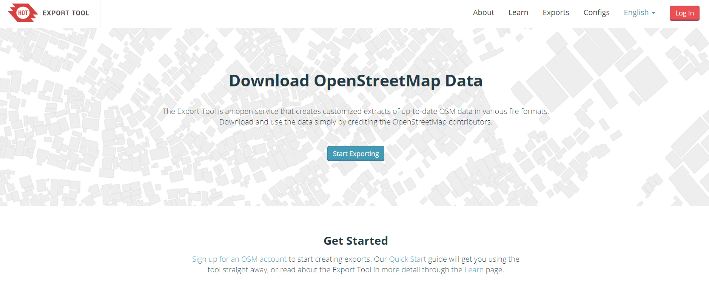
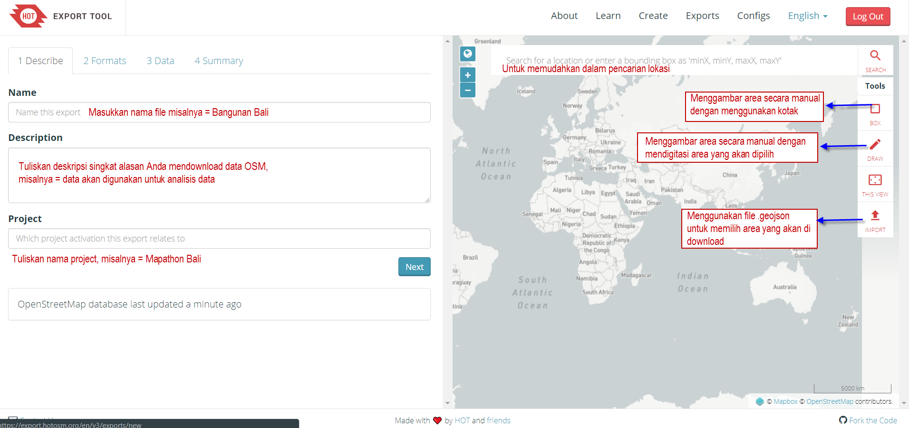
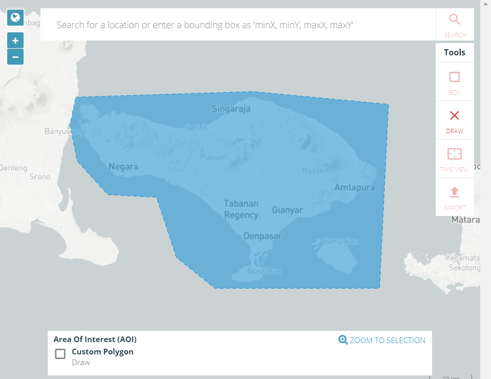
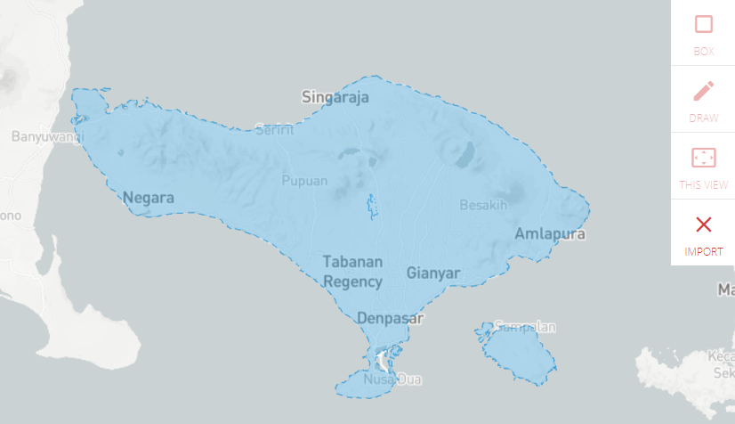
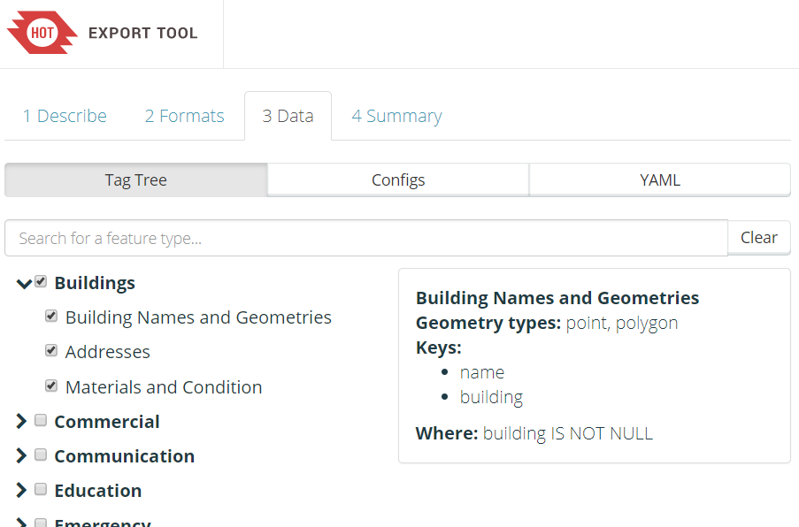
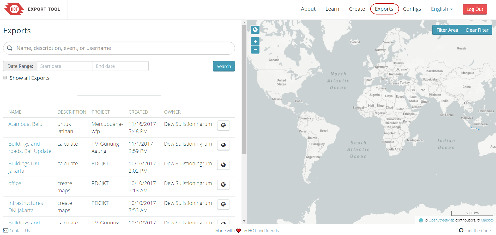

Download Data OSM dengan Menggunakan Export Tool
Download page as PDFTujuan Pembelajaran
- Memahami pengertian Export Tool
- Mempraktikkan cara mendapatkan data OSM dengan Export Tool
Setelah Anda belajar bagaimana menambahkan dan mengedit data pada OpenStreetMap (OSM), sekarang Anda akan mempelajari tentang bagaimana cara mendapatkan data OpenStreetMap yang telah di-upload ke server OSM. Data tersebut dapat digunakan untuk analisis data, kustomisasi simbologi data, membuat peta, dan lainnya sesuai kebutuhan Anda.
I. Pengertian Export Tool
Export tool adalah sebuah layanan terbuka yang digunakan untuk men-download data OSM terbaru yang memberikan kebebasan bagi pengguna untuk memilih data yang akan mereka download di area tertentu. Export tool juga menyediakan pilihan format data spasial, seperti ESRI shapefiles (.shapefile), google KML (.kml), GeoPackage (.gpkg) dan MBTiles (.mbtiles). Anda dapat memilih wilayah yang diinginkan dan kategori data yang akan di-download dengan menggunakan Export Tool. Cara men-download data pada situs ini sangat mudah dan tidak ada persyaratan, hanya Anda diwajibkan untuk mendaftar dengan menggunakan akun OpenStreetMap Anda dan mencantumkan sumber data untuk lisensi kredit pada produk yang Anda buat seperti © OpenStreetMap contributors.
II. Cara Menggunakan Export Tool
- Buka halaman situs Anda, dan ketikkan link berikut ini https://export.hotosm.org

Halaman muka Export Tool
- Anda harus masuk menggunakan akun OSM dengan klik Login di sudut kanan atas. Apabila muncul ‘Authorize access to your account’ klik Grant Access. Jika belum memiliki akun OSM, Anda dapat membuka pada modul Memulai Menggunakan OSM.
- Sekarang Anda sudah berhasil masuk dengan menggunakan akun OSM, kemudian klik Start Exporting untuk memulai proses download data OSM.
- Akan muncul formulir isian dan peta seperti gambar di bawah ini, formulir isian harus diisi dan Anda dapat memilih area yang diinginkan pada peta di sebelah kanan.

Lembar kerja Export Tool
- Ada beberapa cara untuk menggambarkan area yang akan dipilih
Box = Menggambar area dengan menggunakan kotak. Jika Anda ingin mengulang untuk pembuatan kotak klik tanda X pada kolom Box.

Penentuan area dengan kotak
Draw = Menggambar area yang dipilih secara manual

Penentuan Area dengan Bentuk Manual
Import = Menggunakan poligon dalam format .geojson untuk memilih area yang akan di-download. Cara mendapatkan file .geojson dapat Anda lihat pada modul Menggunakan GeoJSON.

Penentuan area dengan berdasarkan admin
- Jika sudah menyelesaikan formulir isian dan menentukan area yang akan di download, pilih menu Format. Pilih data spasial yang Anda inginkan, misalnya shapefile

Format data spasial
- Selanjutnya klik Menu Data, pada bagian ini halaman yang akan muncul akan menyesuaikan pemilihan tipe data spasial yang Anda pilih sebelumnya pada Menu Format. Pada bagian Tag Tree, menunjukkan informasi objek yang sesuai dengan presets OSM secara global. Anda harus memberikan tanda centang untuk data OSM yang akan di-download sesuai dengan kebutuhan data yang diinginkan. Sebagai contoh, jika kita akan men-download data bangunan dan jalan, berikan tanda centang pada Buildings dan Transportation > Roads

Pilihan Objek di Export Tool
- Klik Menu Summary, Anda harus memilih apakah file ekspor ini akan dipublikasikan kepada umum atau hanya ada pada akun Anda. Kemudian klik Create Export untuk memulai proses export data OSM.

Menu Summary
- Tunggu beberapa saat sampai proses selesai. Jika file export Anda telah selesai, Export Tool akan memberikan pemberitahuan melalui email, atau Anda dapat melihat hasilnya di Menu Exports

Menu Exports
- Jika proses sudah selesai akan muncul kotak dialog seperti di bawah ini, klik nama file.shp.zip untuk menyimpan hasil ekspor data OSM di direktori laptop/komputer Anda.

Proses Export Tool Selesai
RINGKASAN
Anda telah mengetahui bagaimana cara men-download data OSM dengan menggunakan Export Tool. Data yang telah Anda download dapat diolah dengan perangkat lunak sistem informasi geografis yang salah satu contohnya perangkat lunak yang Open Source yaitu QGIS (www.qgis.org). Anda dapat memanfaatkan data tersebut untuk perhitungan kuantitas data OSM hasil dari pemetaan untuk membuat analisis data OSM.